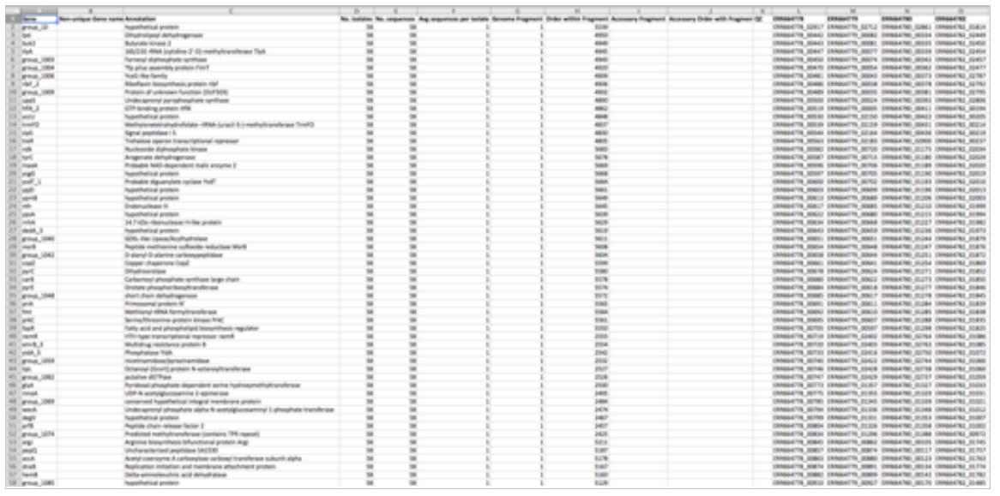

Which strains can you compare?
You can compare any bacterial strains.
Practically, the strains you have available to use are those strains in the Tool 3 libraries. These include the strains that have been sequenced as part of this project, and also a selection of reference strains.
How many strains can you compare?
You can compare two or more strains.
It is recommended that you limit strains to only those that are essential for your query. The more genomes you compare the longer Tool 3 will take to run and the larger and more complex the output files will be. Although the application can compare more than 100 strains, comparing 12 strains would be a lot.
What is the best way to select strains?
This will largely depend on what question you want to answer. Tool 3 will give you the best results when comparing closely related strains rather than very diverse strains. It may be useful to look at phylogenetic trees when selecting strains.
What information does Tool 3 need?
Tool 3 compares annotated genome files. Tool 3 is pre-populated with two libraries: one library contains the annotated files for every sequenced isolate, and the other library contains the annotated files for various reference genomes.
You will find these files in folders LIBRARY_query and LIBRARY_reference. The file type is .gff, which can be generated by prokka.
How do you run Tool 3?
A step-by-step guide can be found in the following sections.
Briefly, once you have chosen which strains you wish to compare, copy the relevant annotation files (.gff) from the libraries to the input directory (input_tool3), set up a stable connection to the server and run the tool_3.nf script. Your output files will be deposited in the output directory (output_tool3).
To find out more about how to change the default settings visit 'More options'.
How much time does Tool 3 take to run?
A comparison of 2 strains can take as little as 12 minutes. The more strains you compare the longer it takes.
What are the different folders for?
The Tool 3 file system contains the following folders:
| Directory names | Description of contents |
|---|---|
| LIBRARY_query/ | The annotated files (.gff) for all sequenced isolates. |
| LIBRARY_reference/ | The annotated files (.gff) for the reference sequences. |
| input_tool3/ | The analysis will be run on ALL .gff files in this directory. |
| output_tool3/ | Your output data will be deposited here in subdirectories. |
| work/ | The Nextflow working directory. |
What documents are made by Tool 3?
Tool 3 provides the following outputs (listed alphabetically):
- accessory_binary_genes.fa
- accessory_binary_genes.fa.newick *
- accessory_graph.dot
- accessory.header.embl
- accessory.tab
- blast_identity_frequency.Rtab
- clustered_proteins
- core_accessory_graph.dot
- core_accessory.header.embl
- core_accessory.tab
- core_alignment_header.embl
- core_gene_alignment.aln
- gene_presence_absence.csv
- gene_presence_absence.Rtab
- number_of_conserved_genes.Rtab
- number_of_genes_in_pan_genome.Rtab
- number_of_new_genes.Rtab
- number_of_unique_genes.Rtab
- pan_genome_reference.fa
- summary_statistics.txt
(*) output is only made if more than 2 strains are compared.
The outputs you will probably use the most are:
- a text document summarising the total number of core genes shared between isolates (summary_statistics.txt),
- a spreadsheet showing presence/absence for every detected gene within your query isolates (gene_presence_absence.csv),

- two files that can be viewed as phylogenetic trees (.newick). One that generates a tree based on an alignment of the core genes. And a second, created based on the binary presence and absence of accessory genes.
How do you view the output files?
You can open the files in a spreadsheet (e.g. MS Excel), a text editor (e.g. MS Word), or Mega/iTOL.
When opening the .csv file note it contains comma separated values (not tab separated).
Can I change the settings of Tool 3?
Yes, you can modify the two different settings: identity and core Using the default settings a gene must be present in 99% of the strains to be counted as a core gene, and have a minimum percentage identity (for blastp) of 95%. These can be altered when you set Tool 3 to run.
For all runs, the settings are recorded in the name of the newly created output folder, e.g. the results of a run named dylan using default settings will be stored in this folder: output_dylan-i95-core99/.
Where can I find further information about Tool 3?
Tool 3 uses two software tools named roary and fast tree. Roary information page at Sanger Pathogens The FastTree information page can be found at Microbes Online.